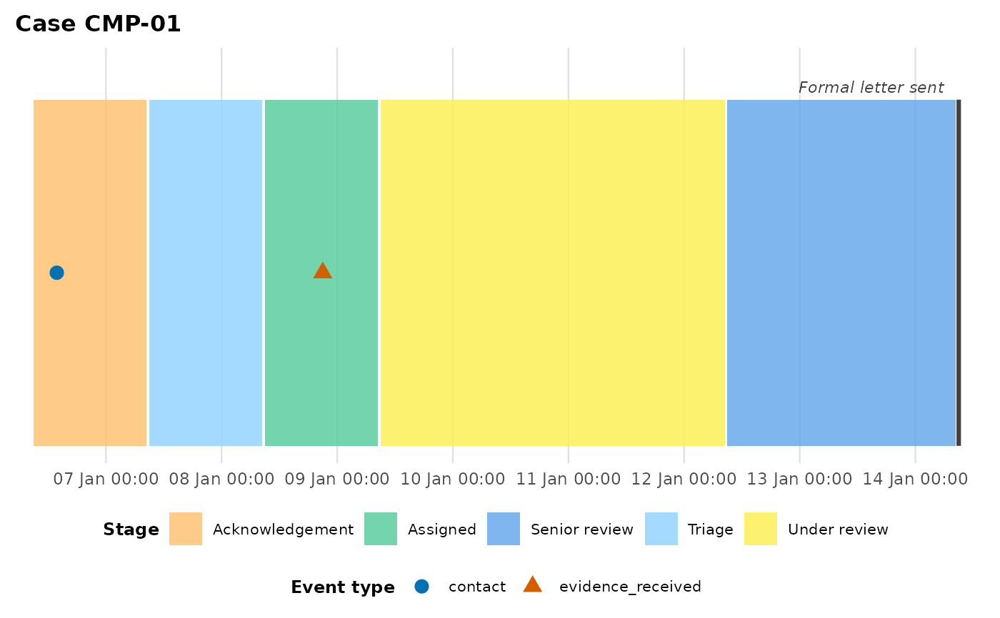
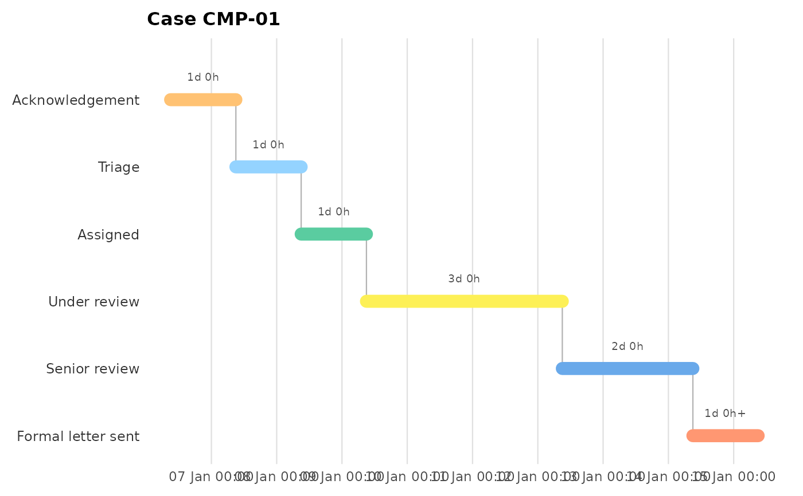

A synthetic complaint-handling event log
complaint_example.RdA deliberately non-spatial event log (eight complaints, each moving through the fixed stages Acknowledgement -> Triage -> Assigned -> Under review -> Senior review -> Formal letter sent, recorded as `act_type = "stage_change"`), used to exercise the linear stage-process features (`patient_col = NULL`, [plot_stage_ladder()]). Sprinkled point events (`contact`, `escalation`, `evidence_received`) exercise the instantaneous-event path. Complaint `"CMP-03"` stalls about three weeks in "Under review" (a per-stage breach); `"CMP-04"` is still open and never reaches the formal letter, exercising the ongoing-spell indication.
Examples
plot_patient_journey(
complaint_example, case_id = "CMP-01",
location_categories = "stage_change", case_col = "complaint_id",
patient_col = NULL, terminal_activities = "Formal letter sent",
state_label = "Stage"
)

plot_stage_ladder(
complaint_example, case_id = "CMP-01",
stage_categories = "stage_change", case_col = "complaint_id"
)
